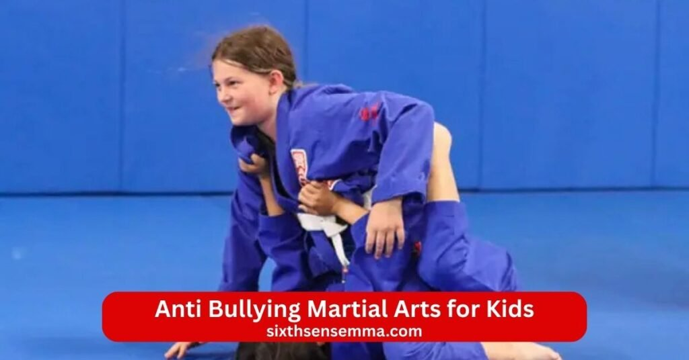
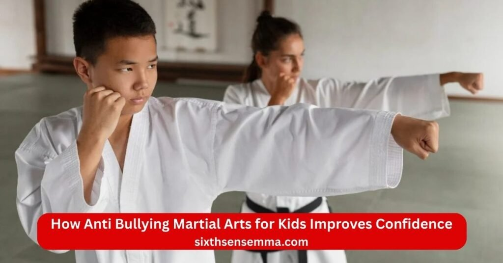
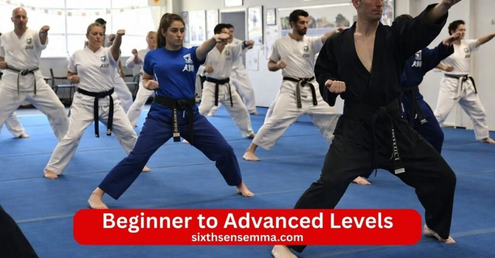

Anti Bullying Martial Arts for Kids Confidence Discipline & Real World Safety Skills

Anti Bullying Martial Arts for Kids is more than just learning to fight it is a smart safe way to help children become strong confident and ready to face tough situations. At Sixth Sense MMA we use brazilian jiu jitsu and jiu jitsu to teach kids real life skills so they can handle bullying intelligently and peacefully without ever needing to hurt anyone.
What Kids Learn in Anti Bullying Martial Arts for Kids
Anti Bullying Martial Arts for Kids gives children real tools to face tough situations. In martial arts classes focused on brazilian jiu jitsu and jiu jitsu kids pick up skills that go far beyond fighting. These martial arts programs teach self defense in smart safe ways. Children develop strong habits that help them deal with bullies and grow stronger inside and out. Here is what kids actually learn step by step.
Situational Awareness and Conflict Avoidance
Kids first learn to notice what happens around them. Situational awareness means seeing signs of bullying before things get bad. In kids martial arts classes instructors show children how to spot trouble early. They practice watching body language listening to words and feeling the mood in a group. This skill helps kids develop the habit of staying alert without fear.The main point is conflict avoidance. Children learn to choose peaceful paths first. They understand that walking away asking for help or changing the subject often stops problems fast. Martial arts for self defense stresses that the best defense is never needing to fight. When kids don’t rush into arguments they stay safer and feel more in control. This training makes them less likely to be targeted because bullies pick on kids who seem unaware or easy to push.
Verbal Boundary Setting and De Escalation Skills
Words become a powerful tool in Anti Bullying Martial Arts for Kids. Verbal assertiveness teaches children to speak clearly and firmly. They practice saying no in a strong calm voice. Simple phrases like stop that is not okay or leave me alone come out naturally after practice.De escalation skills help kids calm tense moments. They learn to use a steady tone keep eye contact without staring and choose words that do not make things worse. In classes for kids role playing shows how to respond when someone teases or threatens. Students learn to stay polite yet direct which often surprises a bully and stops the behavior. This builds assertiveness so children feel ready to stand their ground calmly and confidently.
Non Violent Self Defense Techniques
Non violent methods sit at the heart of brazilian jiu jitsu. Kids learn to protect themselves without violence. Physical self defense here uses leverage and technique rather than brute strength. Children practice holding controlling or redirecting someone bigger without hitting.
Grappling and ground work teaches safe ways to manage a threat. They learn how to use leverage to escape pressure or pin an attacker until help arrives. Martial arts classes repeat these moves so they feel natural. The focus stays on ending danger quickly and safely. This approach makes bjj one of the best martial arts for real protection because it works even when size or power is unequal.
Safe Escape Techniques from Grabs and Pushes
Many bullies use grabs or pushes to scare others. Safe escape techniques show kids exactly how to break free. In martial arts programs children drill simple steps to slip out of wrist holds shoulder grabs or bear hugs. They practice twisting pulling and stepping away smoothly.Kids learn to create space fast so they can move to safety. Instructors teach them to stay balanced keep hands up and use quick turns. These moves come from gracie style jiu jitsu and fit small bodies well. After practice children develop the ability to defend themselves against bullies without starting a fight. Parents notice their child feels less helpless when imagining these situations.
Emotional Control and Confidence Building
Strong emotions can make any problem worse. Emotional control training helps kids stay calm under pressure. They breathe deeply focus on the moment and think clearly even when upset. Discipline and respect grow as they follow rules in class and treat others kindly.Confidence building happens every session. Each new skill mastered adds to confidence and self esteem. Children develop the confidence to face challenges head on. They build confidence through small wins like escaping a hold or speaking up in practice. Over time low self esteem fades and a strong sense of worth takes its place.

How Anti Bullying Martial Arts for Kids Improves Confidence
Anti Bullying Martial Arts for Kids does much more than teach self defense. It changes how children see themselves. Through brazilian jiu jitsu jiu jitsu and other martial arts programs kids build real confidence that shows in school at home and with friends. Every class helps children develop a stronger sense of self. Parents watch their child grow from shy or worried to calm and sure. Here is how this training builds lasting confidence and self esteem.
Building Strong Body Language and Presence
Body language speaks before words do. In kids martial arts classes children practice standing tall keeping shoulders back and making steady eye contact. Instructors show them how to walk with purpose and hold space without looking scared. These small changes make a big difference.When a bully sees a child who stands strong and moves with control the bully often looks for someone else. Kids learn to project calm strength naturally. They stay calm under pressure and their presence tells others they are not easy to push around. This makes them less likely to be targeted by bullies. Over time children develop a natural assertiveness in how they carry themselves. That strong body language carries over to everyday moments and helps build confidence that others notice right away.
Developing Leadership and Teamwork Skills
Martial arts classes are not just about one person. Kids train together roll with partners and cheer each other on. Brazilian jiu jitsu teaches discipline and respect while working as a team. Children take turns leading drills helping newer students and showing good examples.These moments teach leadership in simple ways. A child might explain a move show patience or encourage a friend who struggles. They learn how to work closely support others and stay positive even when tired. Students learn that real strength includes lifting people up not putting them down. This builds respect and discipline and helps kids become natural leaders in groups.
Boosting Self Esteem Through Achievement
Every new skill feels like a win. In Anti Bullying Martial Arts for Kids children start with basic self defense moves then add new techniques week by week. They escape grabs improve positions tap out less often and earn stripes or belts for progress.Each achievement proves to the child I can do hard things. Learning new techniques physical self defense techniques and even verbal assertiveness gives real proof of growth. When kids master something tough like using leverage and technique to handle a bigger partner their confidence jumps.
Age Groups for Our Anti Bullying Martial Arts for Kids Classes
Anti Bullying Martial Arts for Kids fits different ages with programs made just right for each stage. Martial arts classes use brazilian jiu jitsu jiu jitsu and smart teaching to help children grow at their own speed. Every group focuses on self defense skills build confidence and handle bullying in ways that match how kids think and move at that age. Enrolling your child means picking the class that best helps them deal with bullies while having fun and learning safely. Here are the main age groups and what makes each one special.
Young Kids Program (Ages 4–6)
This group is perfect for little ones just starting. Little champions in kids martial arts learn through games songs and simple play. Instructors keep everything fun so children develop interest without feeling scared or pressured.Focus stays on basic self defense like how to stand strong break a gentle grab and say no loudly. They practice verbal assertiveness with easy words and big smiles. Kids learn to stay calm use simple leverage and technique and move their bodies in safe ways. No hard falls or scary moves here.
Junior Program (Ages 7–10)
Kids in this range have more energy and can follow steps better. Rising champions dive deeper into bjj moves while keeping the anti bullying focus strong. Classes mix technique drills games and partner work so learning stays exciting.Students learn stronger physical self defense techniques like escaping wrist grabs standing up safely from the ground and using grappling and ground skills to control without hurting. They learn how to use leverage rather than brute strength which works great since most kids are not big yet.
Pre Teen and Teen Program (Ages 11–15)
Older kids face tougher social pressures so classes match that reality. Anti Bullying Martial Arts for Kids in this group builds on earlier skills with more advanced brazilian jiu jitsu techniques deeper strategy and real life talks about bullying.Teen and adult programs ideas mix in but stay age right. They work on complex escapes takedown defense leverage and control against stronger partners and staying safe on the ground. Self defense includes handling grabs pushes and bigger threats while always choosing non violent options first when possible.
Benefits of Enrolling in Anti Bullying Martial Arts for Kids
Anti Bullying Martial Arts for Kids brings changes that touch every part of a child’s life. When parents choose martial arts classes based on brazilian jiu jitsu or jiu jitsu they give their child more than self defense skills. These martial arts programs help children develop habits and strengths that make school home and friendships better. Enrolling your child opens the door to real growth in focus body mind and how they connect with others. Here are the key benefits families notice most.
Improved Focus and Discipline
Kids today face many distractions. Phones games and busy schedules pull attention in every direction. Anti Bullying Martial Arts for Kids teaches discipline and respect right from the start. In class children follow clear rules listen carefully and finish what they begin.Instructors guide every step so kids learn to concentrate on one move at a time. They practice the same technique until it feels smooth. This repeated effort builds strong focus that shows up in homework reading and listening to teachers. Mental toughness grows too because kids push through tough drills without giving up.
Increased Physical Fitness and Coordination
Kids martial arts gets bodies moving in fun active ways. Brazilian jiu jitsu uses rolls shrimps bridges and escapes that work every muscle. Children build strength endurance flexibility and balance without boring exercises.Grappling and ground work improves coordination because kids must time movements use leverage and technique and react quickly. They learn how to use their body smarter not harder. This makes them faster smoother and more aware of how they move.
Better Social Skills and Peer Interaction
Training happens in a group so kids interact a lot. They pair up shake hands bow to partners and help each other. Respect and discipline rules create a kind space where everyone supports one another.Students learn to communicate clearly take turns celebrate wins and comfort friends who struggle. Verbal assertiveness practice helps them speak up politely. They also watch how to include others solve small disagreements and show patience.
Reduced Fear and Anxiety in School Settings
Many children feel nervous about bullies teasing crowds or being singled out. Anti Bullying Martial Arts for Kids directly fights that fear. Knowing self defense basics gives kids a quiet sense of power. They understand they can defend themselves against bullies without needing to hurt anyone.Stay calm under pressure training helps them breathe think and respond smartly in tense moments. They spot signs of bullying early choose when to walk away or get help and use words with strength. This knowledge cuts worry because they feel ready.
Safety Measures in Our Anti Bullying Martial Arts for Kids Classes
Anti Bullying Martial Arts for Kids puts safety first in every single class. That is why martial arts programs here follow strict rules to keep everything safe fun and positive. Brazilian jiu jitsu jiu jitsu and kids martial arts training happens in a way that protects young bodies and minds. Enrolling your child means knowing they train in a place that cares about safety as much as progress. Here are the main ways safety stays strong.
Supervised and Controlled Training Sessions
Every class has trained instructors watching closely. No child ever trains alone or without adult eyes on them. Teachers guide each move explain why it matters and correct form right away so kids do things the right safe way.Work closely with each child means instructors know each student’s size strength and comfort level. They pair kids with partners who match in age size and skill so no one feels overpowered. Drills stay slow at first then build only as fast as the child is ready.
No Aggressive Sparring for Beginners
Kids don’t jump into hard rolling or fighting right away. Beginners focus on technique position escapes and basic control without speed or power. Non violent self defense comes first so children practice moves that use leverage and technique rather than brute strength.Even as kids get better sparring stays light positional and goal based. The point is learning not winning or hurting. Instructors set clear rules no slamming no neck cranks no wild moves and everyone taps early to stop anything uncomfortable. This keeps physical self defense training safe while still teaching real skills to defend themselves against bullies without fights.
Clean Safe and Child Friendly Facility
The training space stays clean bright and made for kids. Mats get cleaned daily with safe products to kill germs. Equipment checks happen regularly so nothing breaks or wears out in a way that could cause injury.Walls floors and surroundings have no sharp edges or hazards. Space gives plenty of room for movement without kids bumping into things. Temperature stays comfortable and air flows well so everyone feels good during class.
Class Schedule Pricing and Free Trial Information
Anti Bullying Martial Arts for Kids makes it easy for families to start and stay consistent. Martial arts classes fit busy school and family schedules while keeping costs fair. Brazilian jiu jitsu jiu jitsu and kids martial arts programs run with clear options so parents can pick what works best. Enrolling your child becomes simple when you see the times prices and trial chances laid out plainly. Here is everything you need to know about schedule pricing and how to try a class for free.
Flexible Class Timings
Classes happen at times that suit different ages and routines. Morning early afternoon after school and evening slots give parents choices. Weekday sessions run most days with some weekend options too so kids can train even when school gets busy.Young kids ages four to six usually take shorter fun focused classes in the late morning or early afternoon. Junior ages seven to ten fit right after school in the three to six pm range. Pre teen and teen groups often train in the later afternoon or evening when older kids finish homework or activities.

Beginner to Advanced Levels
No experience needed to start. Classes welcome total beginners and guide them step by step. Kids learn basic self defense first then add new techniques as they grow. Instructors watch progress closely and move each child to the right group.Beginner sessions focus on fun fundamentals verbal assertiveness simple escapes and stay calm skills. As kids gain comfort they join classes with more grappling and ground work leverage and technique and live practice at a safe level.
Affordable Membership Options
Pricing stays fair so more families can join. Monthly memberships cover unlimited classes in your child’s age group with no hidden fees for mats gear cleaning or events. Family discounts apply when more than one child or parent trains.Options include basic plans for two or three days a week and full unlimited plans for kids who want to come as often as possible. Drop in rates exist for families testing longer term commitment. All plans include access to open mat times when available and special workshops on conflict resolution strategies or non violent defense.
Free Trial Anti Bullying Martial Arts for Kids Class
Try before you decide. A free trial class lets your child experience a full session at no cost. Parents fill out a quick form online or call to book a spot that fits the right age group and time.During the trial your child joins a regular class meets instructors tries warm ups drills partner work and games. They get to feel the safe friendly environment see how discipline and respect work in action and practice simple physical self defense or verbal boundary setting moves.
Why Choose Sixth Sense MMA for Anti Bullying Martial Arts for Kids Program
Sixth Sense MMA stands out as the right place for Anti Bullying Martial Arts for Kids. Families in Coppell and nearby areas trust this gym because it combines real brazilian jiu jitsu training with a deep focus on helping children grow strong inside and out. Martial arts programs here go beyond moves to empower children build confidence and teach them how to handle bullying safely every day. Parents see real changes in their kids after just a few classes. Here is why so many choose Sixth Sense MMA for this important work.
Certified Instructors Experienced in Child Development
Instructors at Sixth Sense MMA hold proper certifications in bjj and jiu jitsu plus they understand how children think learn and grow. Many have years working with kids in schools camps and gyms so they know exactly how to teach self defense skills in ways that match each age.They work closely with each child watch for signs of worry or excitement and adjust every drill to fit. This experience helps teach children discipline and respect while keeping lessons fun and clear. Kids feel safe asking questions and trying new things because the teachers explain patiently and praise effort. Parents appreciate knowing their child learns from adults who care about more than just technique they care about the whole child.
Safe Structured and Positive Training Environment
Safety comes first at Sixth Sense MMA. Every class follows clear rules so kids don’t face unnecessary risks. Mats stay clean equipment checks happen often and instructors supervise every moment. Non violent methods stay the focus especially for beginners with no hard sparring until kids build skills and confidence.The gym feels welcoming bright and organized with space that lets children move freely. Positive energy fills the room kids cheer for each other high five after good work and learn to support teammates. This structured setup teaches respect and discipline naturally while keeping everything fun. Children look forward to class because they feel secure happy and part of a kind group.
Age Appropriate Anti Bullying Curriculum
Sixth Sense MMA designs every program to match the child’s age. Young kids ages four to six play games sing songs and practice simple verbal assertiveness like saying stop with a strong voice. Junior kids ages seven to ten add more physical self defense techniques escapes and leverage and technique while role playing real bullying moments.Pre teen and teen groups tackle tougher topics like peer pressure online issues and standing up for friends. All levels use brazilian jiu jitsu moves that fit small bodies no punches and kicks needed. The anti bullying lessons grow with the child so children develop the right tools at the right time. This smart approach makes sure every kid gets what they need to prevent bullying deal with bullies and feel ready.
Focus on Confidence Awareness and Self Control
The heart of Sixth Sense MMA training builds inner strength. Kids practice situational awareness to spot trouble early stay calm under pressure and choose smart responses. They master emotional control through breathing focus drills and learning to think before acting.Every small win like nailing a new escape or speaking up in role play adds to confidence and self esteem. Children develop the confidence to stand their ground calmly and confidently and carry that feeling into school hallways playgrounds and friendships. Mental toughness grows as they push through challenges and see results. Parents notice their child walks taller talks more openly handles frustration better and worries less about bullies.
Contact US
Getting in touch with Sixth Sense MMA is quick and easy. If you want more details about our Anti Bullying Martial Arts for Kids program would like to book a free trial class or have questions about enrolling your child just reach out. We reply fast and love helping families take the first step toward building stronger more confident kids.
Conclusion
Anti Bullying Martial Arts for Kids at Sixth Sense MMA is more than just classes it is a smart way to help your child grow strong safe and confident. Through brazilian jiu jitsu and jiu jitsu training kids learn real self defense skills without needing punches and kicks. They master leverage and technique verbal assertiveness and how to stay calm under pressure so they can deal with bullies in a peaceful smart way.
- 817 S MacArthur Blvd #100 Coppell TX 75019 United States
- (469) 972 7800
- info@sixthsensemma.com
Follow Us on Social Media
Stay connected with Sixth Sense MMA through our social media channels. Follow us for class updates, training tips, and a closer look at our self defense community.
FAQ’s
Brazilian jiu jitsu often ranks as the top choice for kids facing bullying. It teaches leverage and technique rather than brute strength so smaller children can handle bigger opponents safely. Kids gain real self defense skills like control holds and escapes without needing to strike. The training builds strong confidence making them less likely to be targeted since bullies avoid kids who carry themselves with assurance. Many programs focus on non violent solutions first like verbal assertiveness and walking away. This approach helps prevent bullying while giving practical tools if needed.
Yes, martial arts help a lot with bullying in real ways. It builds confidence and self esteem so kids stand taller, speak clearer and seem less like easy targets. Training teachers stay calm under pressure, verbal assertiveness and conflict resolution strategies to de-escalate situations before they turn physical. Kids learn to spot signs of bullying early and respond smartly often without fighting. Studies and parent reports show trained kids face less bullying because they project quiet strength and know how to defend themselves against bullies without starting harm. It also channels energy positively reducing the chance a child becomes aggressive.
Martial arts can be very good for kids with behavioral problems when done in a structured positive gym. It teaches discipline and respect through clear rules, routines and consequences like losing a turn for not listening. Kids practice emotional self control and focus on one task at a time which helps manage impulses. Partner work builds social skills, patience and teamwork. Many instructors see improvements in behavior at home and school as kids learn to channel energy constructively. The key is finding a school with patient teachers who understand kids and emphasize positive reinforcement over punishment.
Jiu jitsu usually edges out for most kids especially for practical self defense and real life confidence. It focuses on ground control escapes and using leverage which fits scenarios where fights go close or to the floor. Kids learn to stay safe without relying on speed or power. Taekwondo shines in building athleticism, flexibility, high kicks and discipline through structured forms and belts. It offers fun competition and clear progress. For anti bullying or everyday protection jiu jitsu often feels more useful but both build confidence, discipline and fitness. The best one depends on the child’s interests, the school’s quality and what goals matter most.
Both karate and taekwondo help kids with ADHD but taekwondo often stands out slightly more. It provides high energy movement, lots of kicking and fast sequences that burn excess energy while demanding focus and quick reactions. The structured routines belt system and emphasis on self control help with impulsivity and attention. Karate offers similar benefits with strong forms of breathing control and discipline but can feel more grounded and repetitive which suits some kids better for building calm. Both improve concentration, reduce hyperactivity and teach patience through consistent practice. Pick based on the child’s energy level and the instructor’s experience with ADHD kids.
Jiu jitsu tends to suit more kids for modern needs but judo has strong advantages too. Jiu jitsu emphasizes ground work submissions and control making it great for practical self defense and building problem solving under pressure. It fits real bullying scenarios well and teaches calm escapes. Judo focuses on throws, takedowns, balance and quick standing skills which builds excellent coordination, athleticism and respect. It often starts younger and transfers well to other grappling. For confidence, anti bullying and long term growth many prefer jiu jitsu but judo excels in overall physical development and discipline. A good school matters more than the style.
Several martial arts excel at building mental discipline through focus routine and self control. Karate stands out with its strict forms breathing emphasis and respect codes that demand constant attention. Taekwondo pushes perseverance through high level patterns and testing. Brazilian jiu jitsu teaches calm thinking under stress and problem solving on the mat. Judo builds mental toughness via throws and quick decisions. Tai chi offers slow meditative movement for deep concentration. All require showing up consistently pushing through discomfort and controlling emotions which strengthens the mind over time.
Yes jiu jitsu helps strongly with bullying. It builds unshakable confidence so kids no longer look like victims. Training teaches non violent control like holds and escapes to neutralize threats safely without striking. Kids learn to stay calm under pressure, use verbal assertiveness and avoid fights when possible. The physical proof of handling bigger partners makes them less likely to be targeted. Many parents and experts say jiu jitsu kids stand their ground more often, walk away stronger and rarely face repeated bullying.
Karate and taekwondo often top the list for teaching discipline to kids. Both use clear structures, belt ranks bowing respect for instructors and repetitive practice that demands focus obedience and perseverance. Judo also shines with its emphasis on etiquette, hard work and self control during throws. Brazilian jiu jitsu builds discipline through consistent effort, partner cooperation and pushing limits safely. Any good traditional school works but ones with strong rules routines and positive reinforcement help kids internalize discipline and respect fastest.
No single best one exists but taekwondo karate and brazilian jiu jitsu help many kids with ADHD. Taekwondo offers high movement energy release and structured sequences that improve focus and reduce hyperactivity. Karate provides repetition forms and breathing for better self control and attention. Brazilian jiu jitsu channels energy into grappling problem solving and calm under pressure building mental toughness. All give outlets for excess energy while teaching patience, routine and concentration. The right instructor who understands ADHD makes the biggest difference.
Train with us in Coppell
The first class is free. Shorts, a t-shirt and a water bottle. We lend the rest.
Book a free class